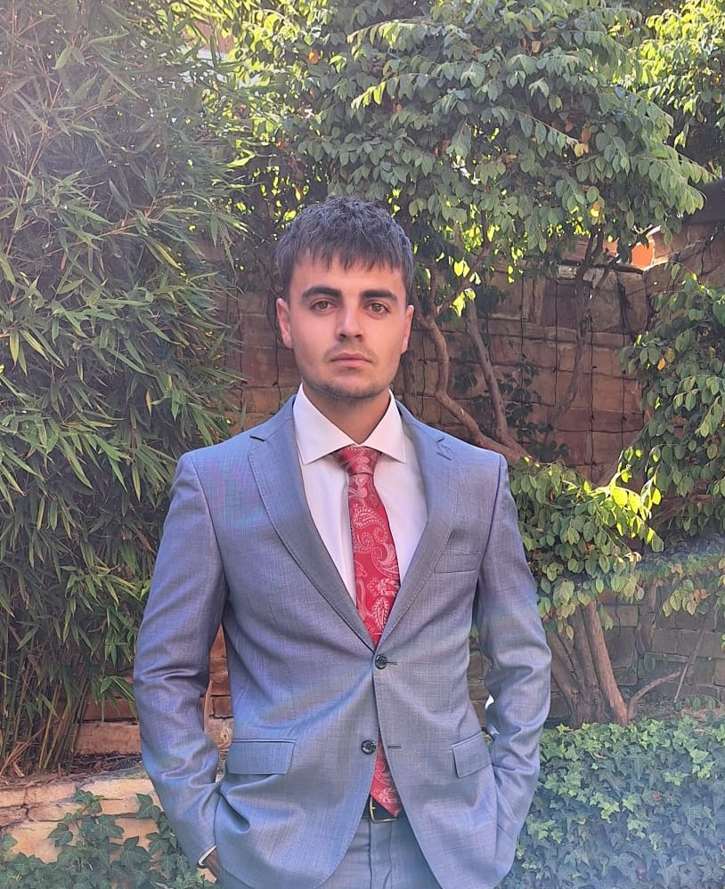
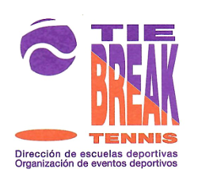
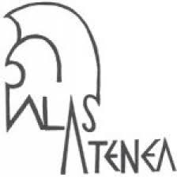
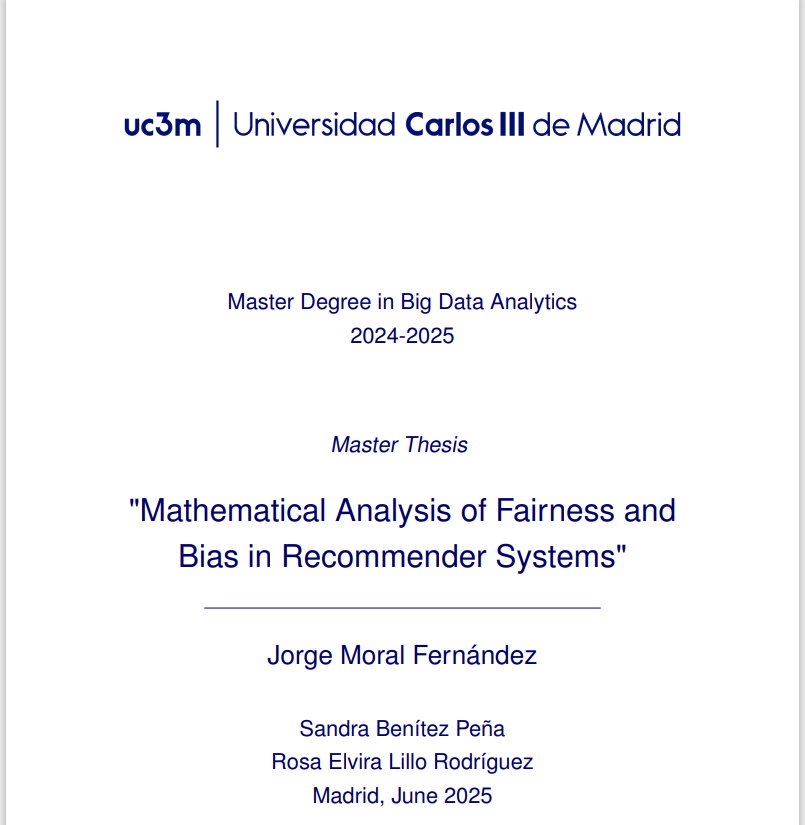
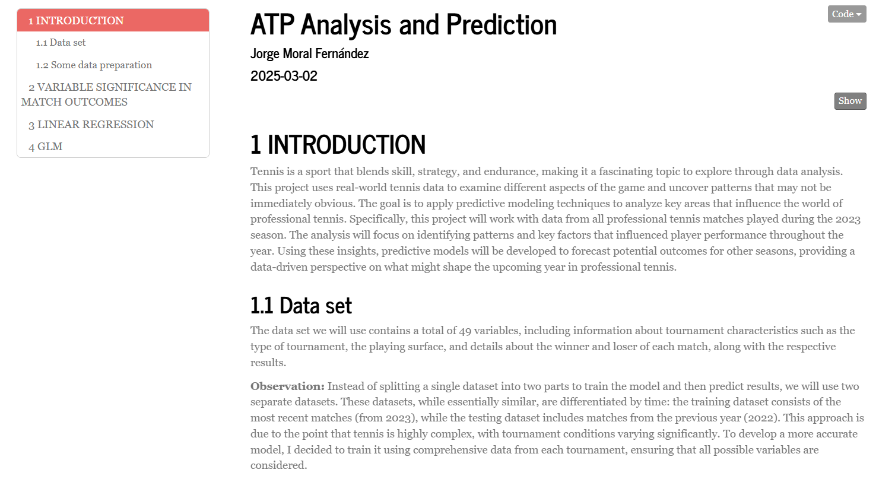
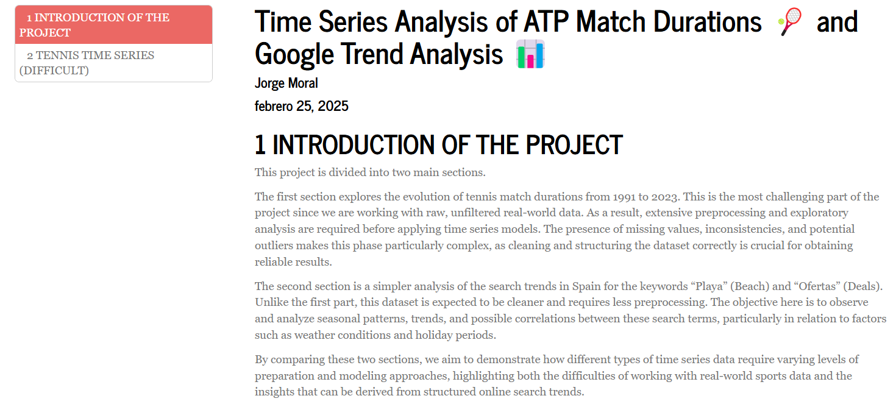
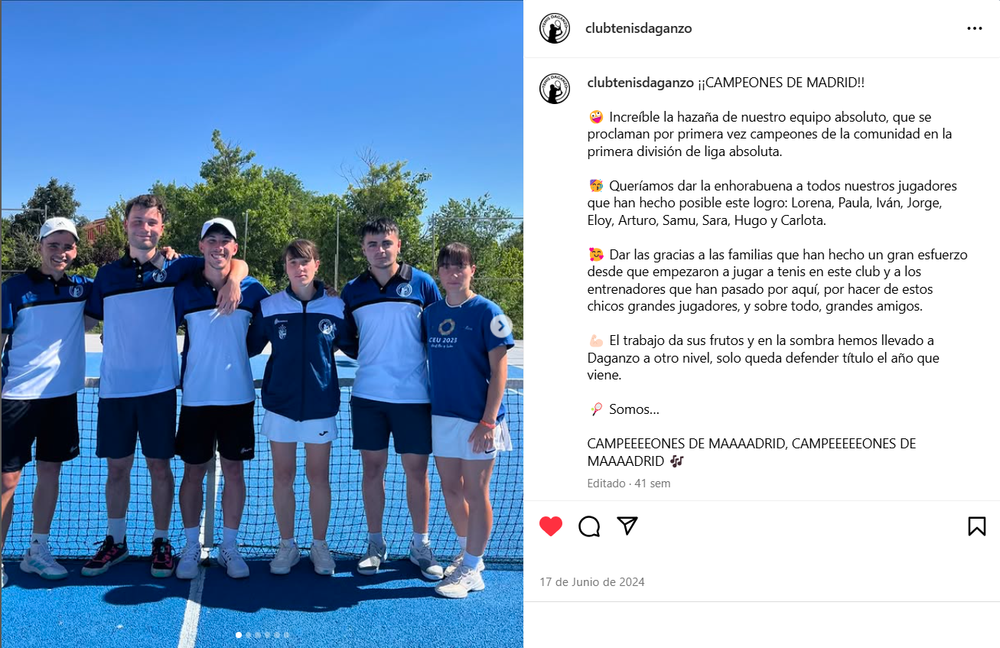

Jorge Moral
Data Scientist & Risk Analyst
Data Scientist and Risk Analyst with a strong mathematical foundation and a unique dual background in high-performance sports. I specialize in transforming uncertainty into actionable insights through advanced statistical modeling, machine learning, and data-driven decision-making. I bridge the gap between data science, risk analysis, and real-world strategy, combining analytical rigor with the mindset of an elite sports coach.
My Approach
Data creates value only when it drives better decisions.
Models must be interpretable, robust, and aligned with strategic objectives.
Bridge analysis and execution: communicate insights clearly, tie them to actions, and measure impact.

The Analyst & The Coach
I am a Data Scientist and Analyst with a Degree in Mathematics and a Master’s in Big Data Analytics and Artificial Intelligence. My professional focus lies in predictive modeling, risk analysis, and applied machine learning, where I design models that support strategic decisions in uncertain environments.
In parallel, I am a professional tennis coach, actively working in performance development, training optimization, and competitive analysis. This dual career has shaped a distinctive professional profile: I approach data problems the same way I approach athlete development through pattern recognition, feedback loops, and continuous improvement.
Master's
Big Data Analytics
Bachelor
Mathematics
Coach
RFET Certified
Technical Skills
Production-oriented data science: clean pipelines, reproducible experiments, and robust models.
Soft Skills
Leadership through clarity: communicate, structure, and perform under pressure.
Methodologies & Approaches
Structured workflows and rigorous evaluation to ensure reliable, interpretable outcomes.
Bankinter
Data Scientist & Risk Analyst
Specializing in credit risk assessment and financial modeling. Utilizing statistical analysis to predict market trends, evaluate portfolio risks, and optimize decision-making strategies.
Monitoring key risk metrics: Probability of Default (PD) and portfolio performance indicators.
Data extraction and processing at scale with SAS and SQL.
Excel dashboards and reporting to explore user behavior, risk patterns, and policy impact.
Continuous improvement in risk strategies through data-driven insights.
Tie-Break Tennis

Professional Coach
Leading high-performance training sessions. Applying analytical thinking to player development, strategy formulation, and mental conditioning.
Personalized programs focused on teamwork, discipline, and continuous improvement.
Adaptive communication across ages and skill levels; clear objectives and trust-building.
Internal tournaments and competitive pathways promoting collaboration and resilience.
Transferable skills: leadership, organization, motivation management, and performance under pressure.
UC3M
Master in Big Data Analytics
Specialized in Machine Learning, Bayesian Learning, and Predictive Modeling. Advanced training in Deep Learning architectures.
GPA: 9.2 / 10- Advanced ML: Tree ensembles, regularization, and model calibration.
- Bayesian methods: inference, priors/posteriors, hierarchical models.
- Deep Learning: CNN/RNN foundations and practical pipelines.
UAM
BSc Mathematics
Strong foundation in Probability, Linear Algebra, and Optimization. Developed rigorous analytical and problem-solving skills.
GPA: 8.2 / 10- Probability & Statistics: measure theory basics, stochastic processes.
- Optimization: convex analysis, numerical optimization.
- Linear Algebra: spectral theory and matrix decompositions.

Excellence Program
Bachillerato de Excelencia
Selected for the High Academic Performance Program (STEM). Advanced curriculum in Mathematics, Physics, and Technical Drawing.
GPA: 9.7 / 10- STEM Core: Mathematics, Physics, Technical Drawing.
- Research project on ancient ballistics — first approach to academic research.
Here you’ll find my Bachelor and Master theses—solid math foundations brought into real ML and Big Data use cases—plus two tennis projects where I mix technical analysis with the sport I love. It’s end‑to‑end work: exploring data, shaping features, and building predictive models with a focus on clarity and performance.
Gradient Flow Theory
Mathematics • OptimizationThesis on Gradient Flow Theory applied to Neural Networks Optimization.
Read Thesis
Bias and Fairness in Machine Learning
ML • FairnessMaster's Thesis focusing on algorithmic fairness, metrics, and mitigation techniques.
Read Thesis
ATP Predictive Models
ML • Tennis • PredictionMachine Learning applied to professional tennis match outcomes.
View Projects
Temporal Tennis Trends
Data • Trends • InsightsStatistical analysis of the evolution of tennis over decades.
View ProjectsI share here my greatest passion: tennis — a discipline that has taught me consistency, strategy, and mindset.
Achievement: led Daganzo club to the top levels of Madrid’s rankings alongside my teammates — an experience that reflects teamwork, dedication, and a winning mindset.
